# load packages we need
library(tidyverse)
library(readxl)
# read dataset excel file
ehs655 <- read_xlsx("Dataset V1.xlsx")Types of data, descriptive statistics, and censoring (Lecture 4)
What we’ll cover today
The basics
Types and scales of data
Descriptive analysis and visualization
Distribution
Central tendency
Dispersion
Censored data
The basics: understanding exposure

Assessing exposures
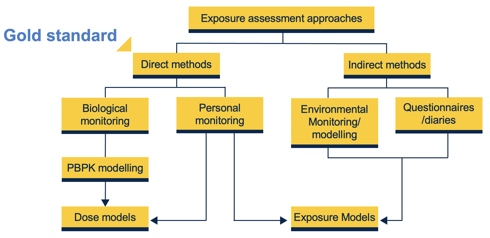
Exposure data examples
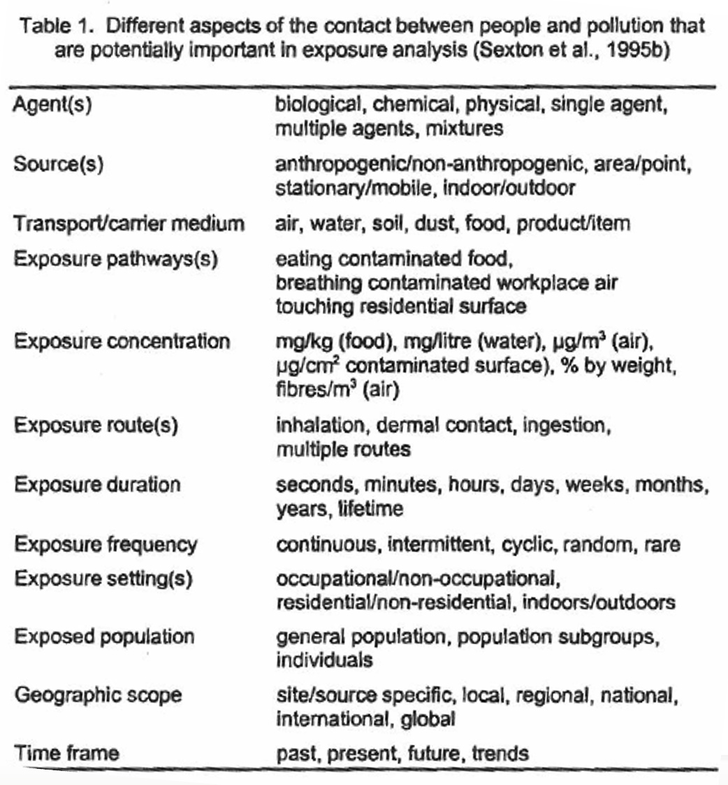
Exposure data examples

Types and scales of data
Binary and nominal
Values only used as labels
Binary = two categories
Nominal >= two categories
Not ordered
- Tells nothing about individual’s ranking
Examples?
Binary: gender
Nominal: occupation (if not ordered in some way related to exposure)
Ordinal
Values used indicate rank ordering (e.g., low/moderate/high)
Differences between numbers do not indicate actual size of differences
Examples?
Socioeconomic status
Crude categories of exposure (e.g., exposed daily, weekly, monthly, yearly)
Numeric
Relative values of assigned numbers reflect true differences in underlying values
We’ll treat these as “numeric”
Examples?
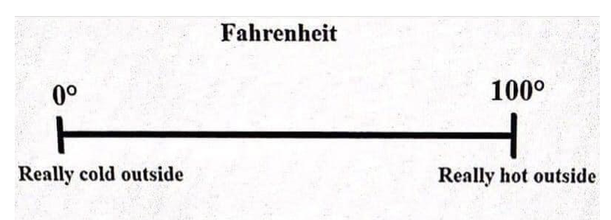
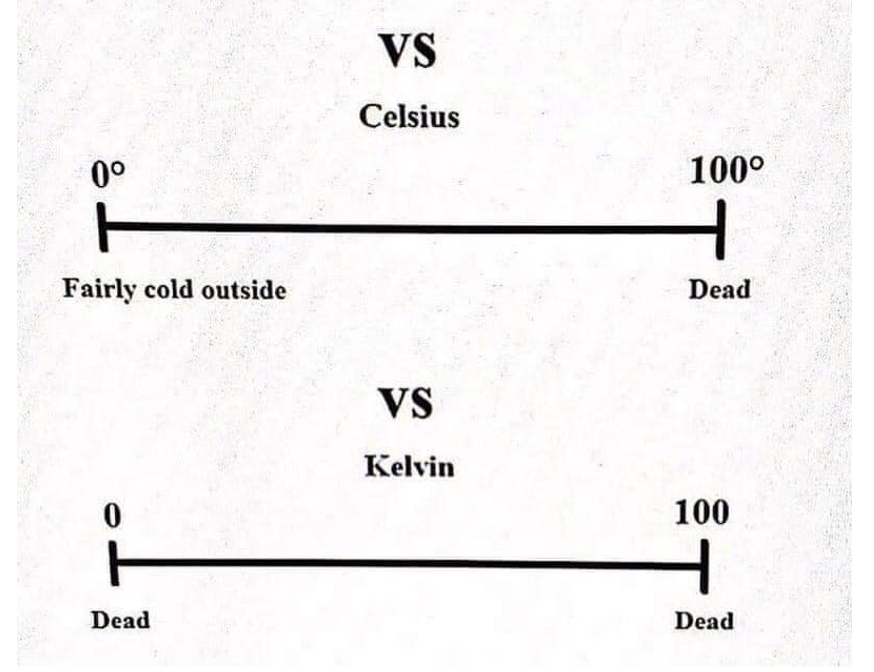
Exercise
Imagine a study of exposure to 1,4 dioxane in drinking water among community members in Ann Arbor
Think of an example of potentially relevant exposure information for each of following data scales:
Binary
Nominal
Ordinal
Numeric

Data types associated with exposure assessment methods
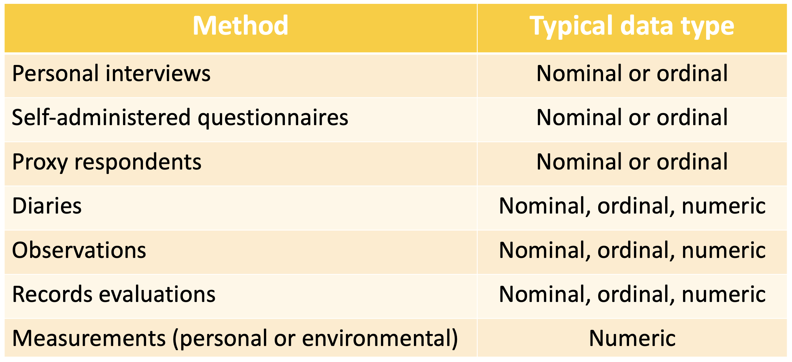
Data that might be available for exposure analysis

Tool to help document exposure measurements
AIHA Basic Exposure Assessment and Sampling Spreadsheet

Let’s explore!
Tool to help collect information on exposure scenarios
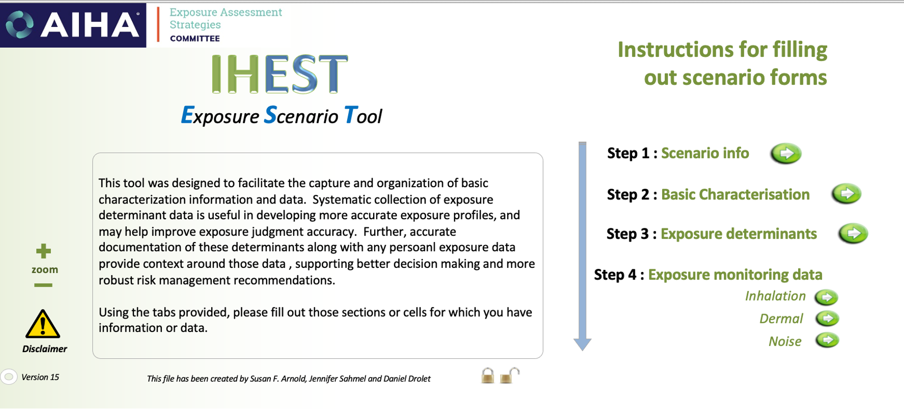
Let’s explore!
https://aiha-assets.sfo2.digitaloceanspaces.com/AIHA/resources/Public-Resources/IHEST_V15.xlsm
Note: you mus enable Macros in Excel for tool to work
Ramifications of data scales
When exposures can be quantified, best to capture as quantitative rather than categorical
E.g., #cigarettes per day instead of <14, 15-24, 25-34, etc.
Even if categories equally sized, mean value in each category cannot be computed
Can always collapse quantitative to categorical – but not vice versa
- May even want to do this, as ordinal is easy to understand, makes no dose-response assumptions
Descriptive analysis
Before we can make inference from data we must thoroughly examine variables
Catch mistakes
Look for patterns
Find violations of statistical assumptions
Generate hypotheses
Avoid headaches later

Scope of dataset/analysis
Univariate
- Measurements on one variable per subject
Bivariate
- Measurements on two variables per subject
Multivariate (not today’s focus)
- Measurements on many variables per subject
Univariate analyses
Characteristics of single variable
Typically
Distribution (frequency distribution)
Central tendency (mean, median, mode)
Dispersion (range, quartiles, absolute deviation, variance, standard deviation)
Distribution: categorical (table)
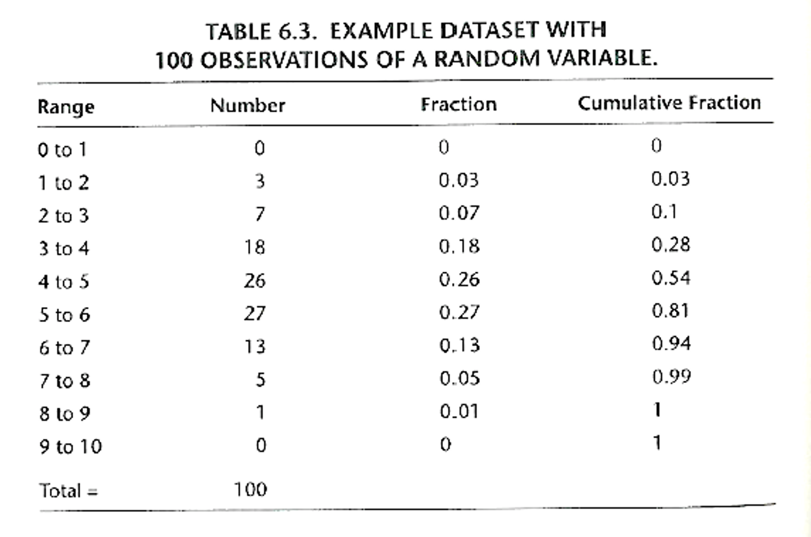
Distribution: categorical (ordinal)
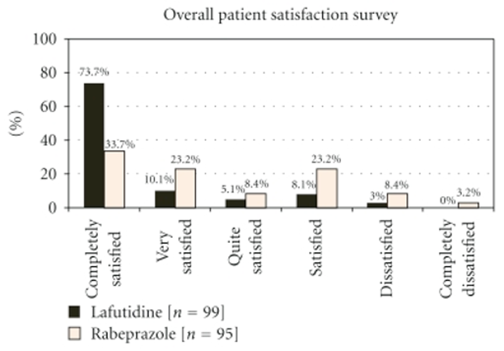
Distribution: quantitative (ratio) histogram
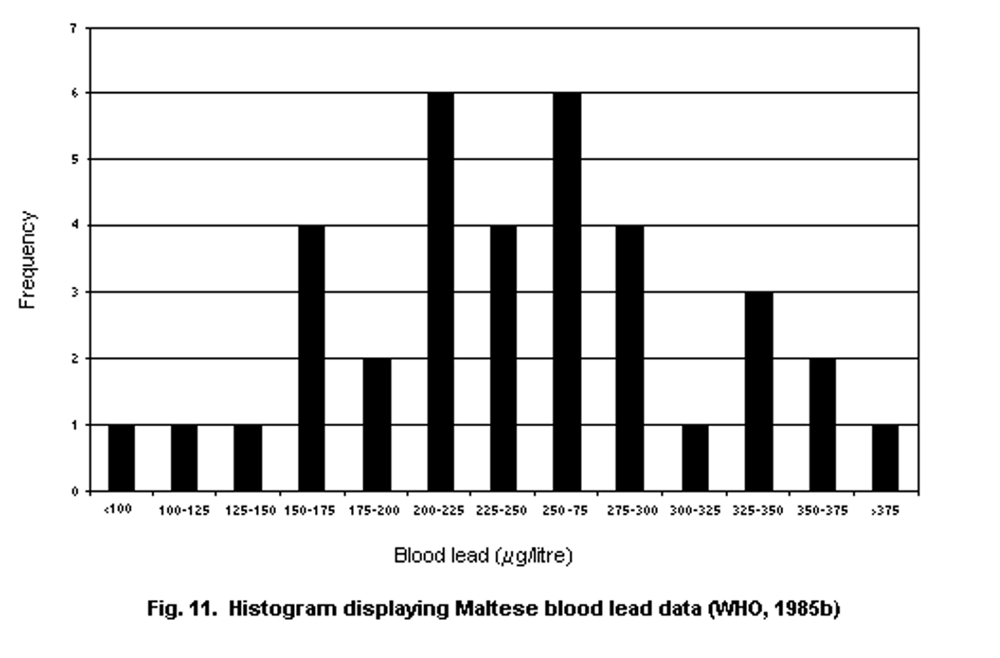
Distribution: exceedance fraction
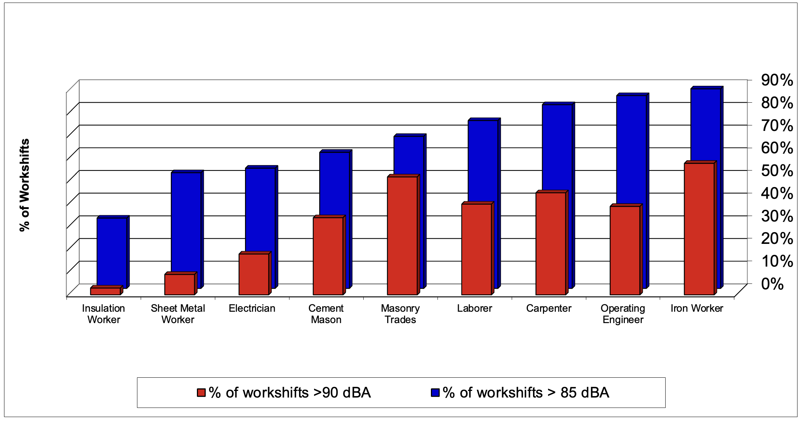
Central tendency: mean, median, mode

Dispersion
Measures which identify spread of data (i.e., how far measurements are from “center”)
Range (min to max)
Quartiles (Q3 – Q4 is interquartile range, IQR)
Standard deviation (SD) Variance

Dispersion: standard deviation vs variance
Standard deviation
Not dependent on n
Not affected by number of measurements
Expressed in same units as data
Commonly used in exposure analysis
Variance is square of standard deviation
Squaring eliminates negative values
Unit is square of measurement unit (!) – i.e., not same units as data
Values farther from mean contribute more to variance
Commonly used in exposure analysis
Dispersion visualization: boxplot
R: ggplot(dataset, aes(x = varname1, y = varname2) + geom_boxplot()
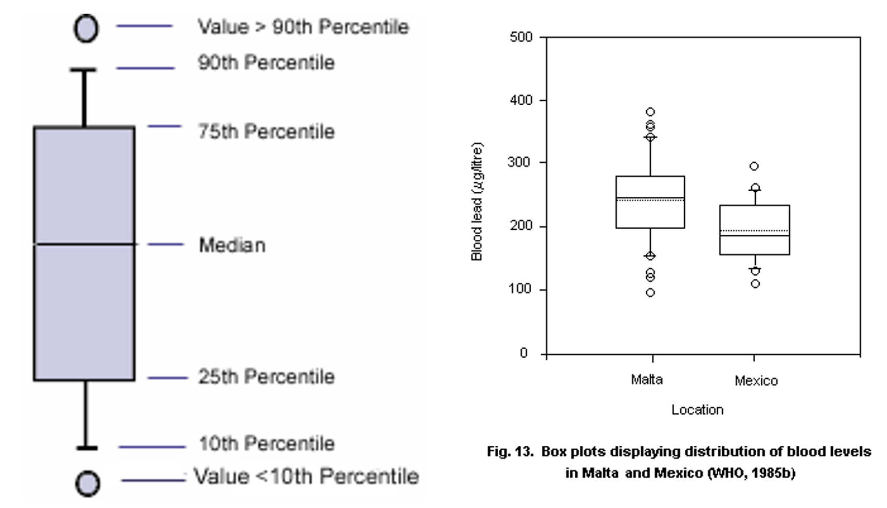
Excel tool available for basic descriptive statistics: IHSTAT

Bivariate analyses
Allow us to begin to explore relationships between variables
Scatter plot
Correlation
Cross-tabulation
Bivariate: scatter plot
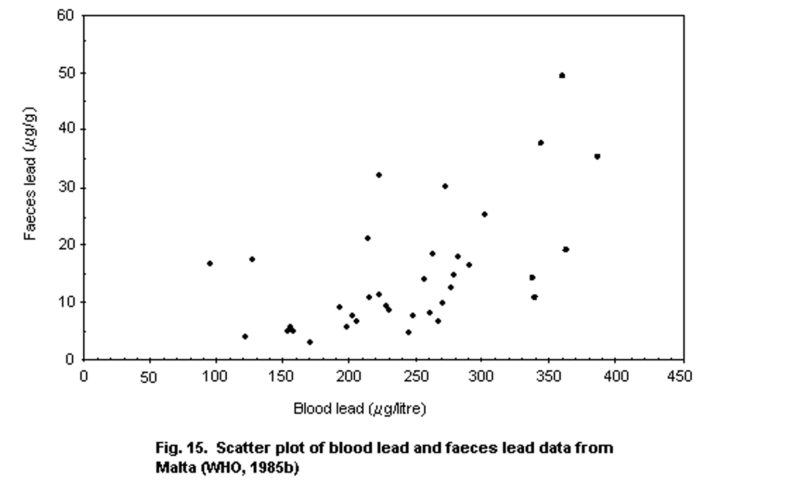
Bivariate: Pearson correlation
- \(\rho\) (Pearson’s correlation coefficient) is amount of change in one value you expect from change in another value
- Assumptions:
- Both variables numeric data
- Both variables normally distributed
- Absence of outliers
- Linear relationship
- Homeskedasticity

Bivariate: Spearman correlation
Spearman’s rank correlation coefficient (\(\rho_s\))
Pearson correlation coefficient between ranked variables
Raw scores \(X_i\), \(Y_i\) converted to ranks \(x_i\), \(y_i\)
Nonparametric (no distributional assumptions)
Assumptions:
Numeric or interval data
Monotonic relationship

Bivariate: Spearman vs Pearson correlation coefficient
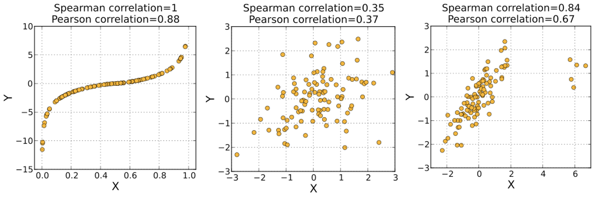
Bivariate: cross-tabulation
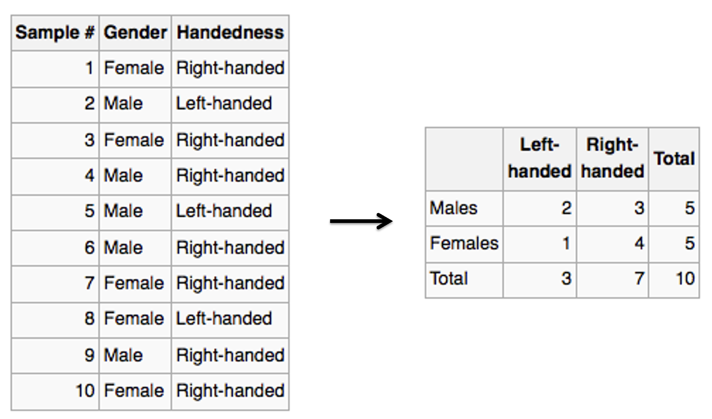
Censored data

Exercise
Come up with one example of exposure data where you might find each type of censoring
Right censoring
Left censoring
Interval censoring
One example that’s immediately relevant: our own noise measurements
LEQ measured from 70-140 dBA
Minutes with levels that never exceed 70 dBA assigned 0 dBA
Shifts with mixture of minutes above and below 70 dBA may yield shift average <70 dBA
Common approach #1 to dealing with censored data
Common approach #1 to dealing with censored data

On to R!
Get the data ready again
Distributions
Calculating mean and median (mode from frequency table)
Calculating mean and median (mode from frequency table)
Bivariate: cross-tabulation
Use the xtabs function
xtabs(~`Job-title` + `Gender`, data = ehs655) Gender
Job-title F Female M Male
Carpenter 2 0 36 0
Carpentr 0 0 2 0
Electrican 0 0 2 0
Electrician 4 0 35 0
Ironworker 0 0 38 2
Ironworkr 0 0 2 0
Laboerr 0 0 2 0
Laborer 4 0 28 2
Lborer 0 0 2 0
Operaing engineer 2 0 0 0
Operating engineer 6 2 30 0